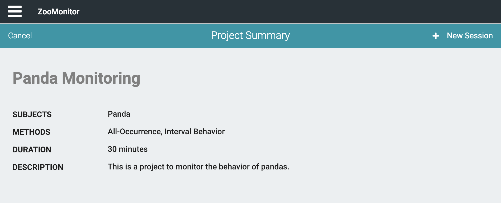
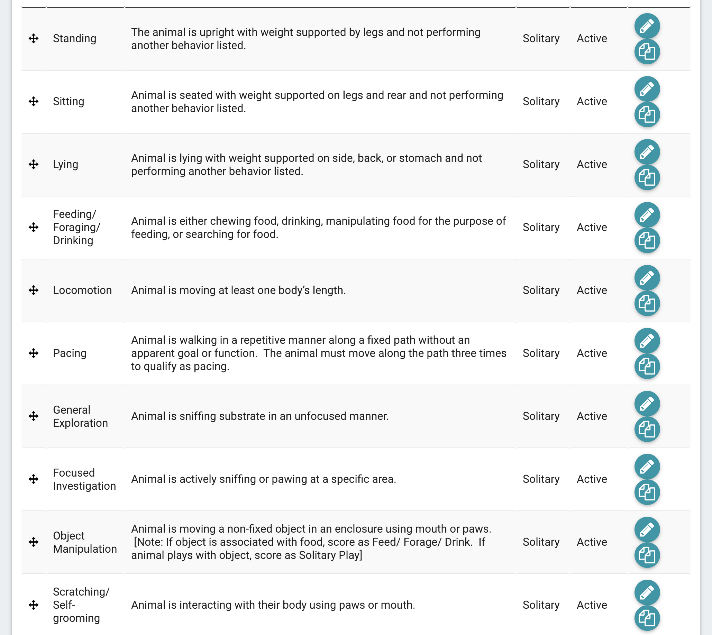
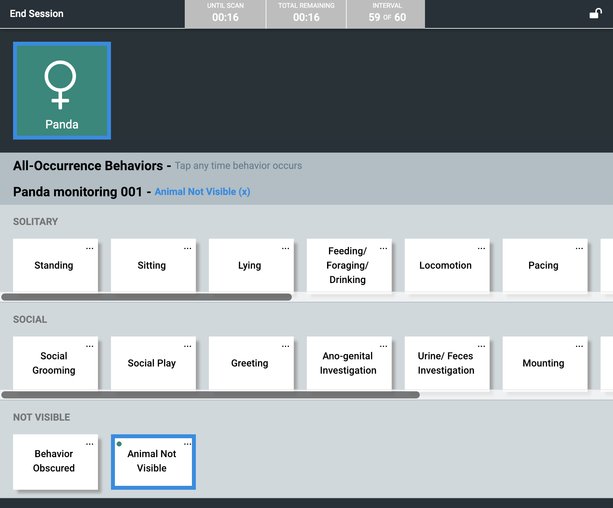
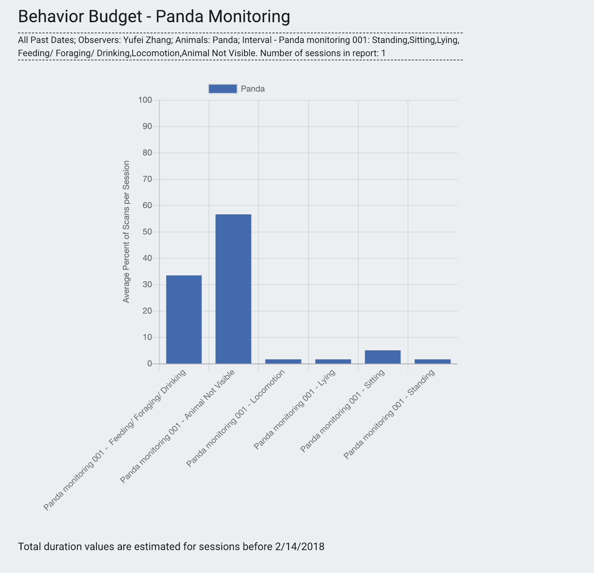
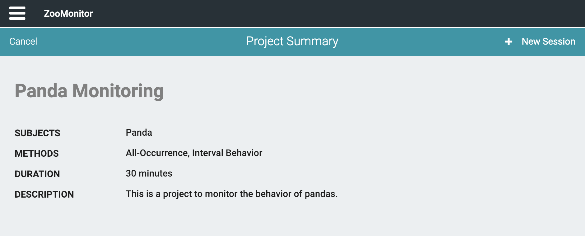
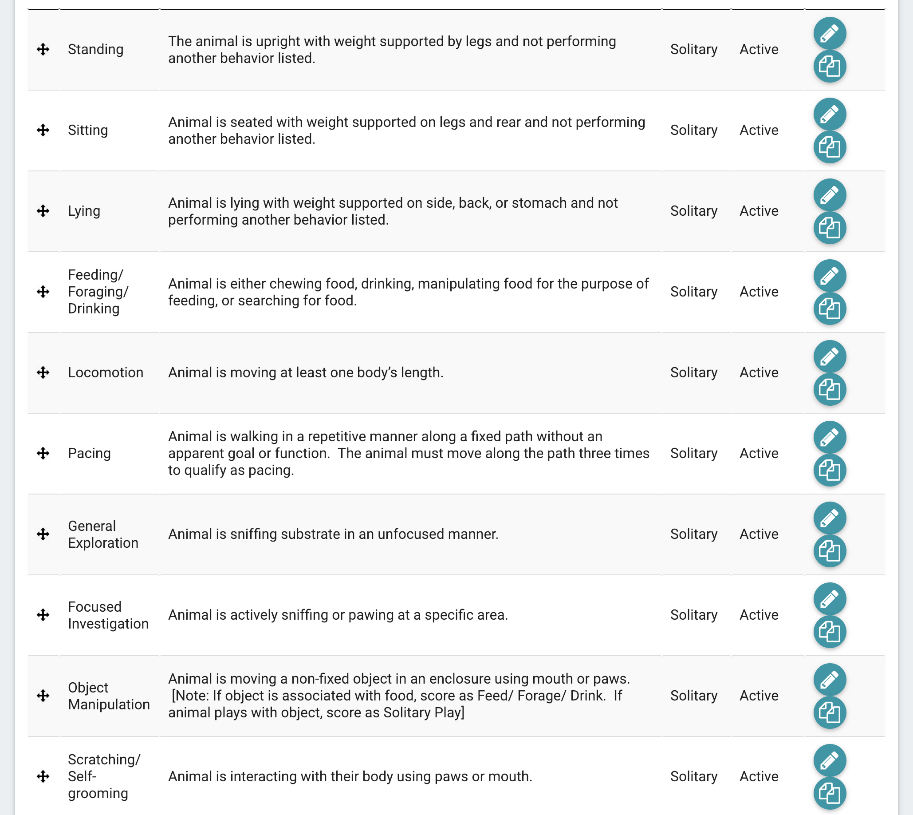
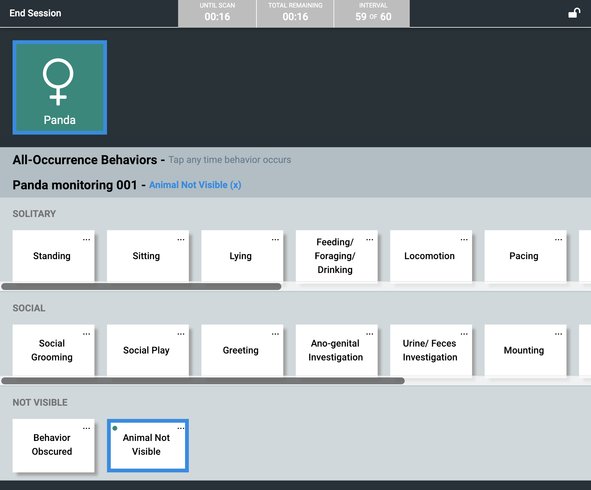
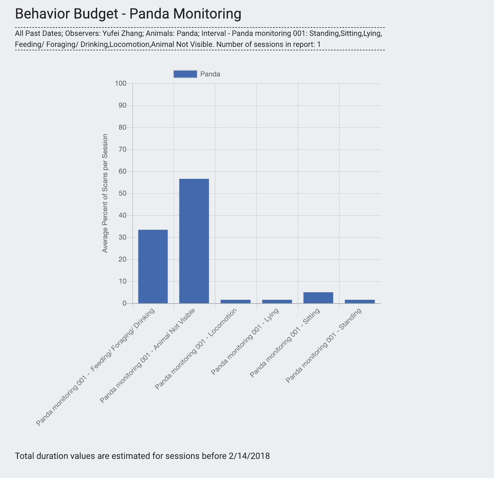
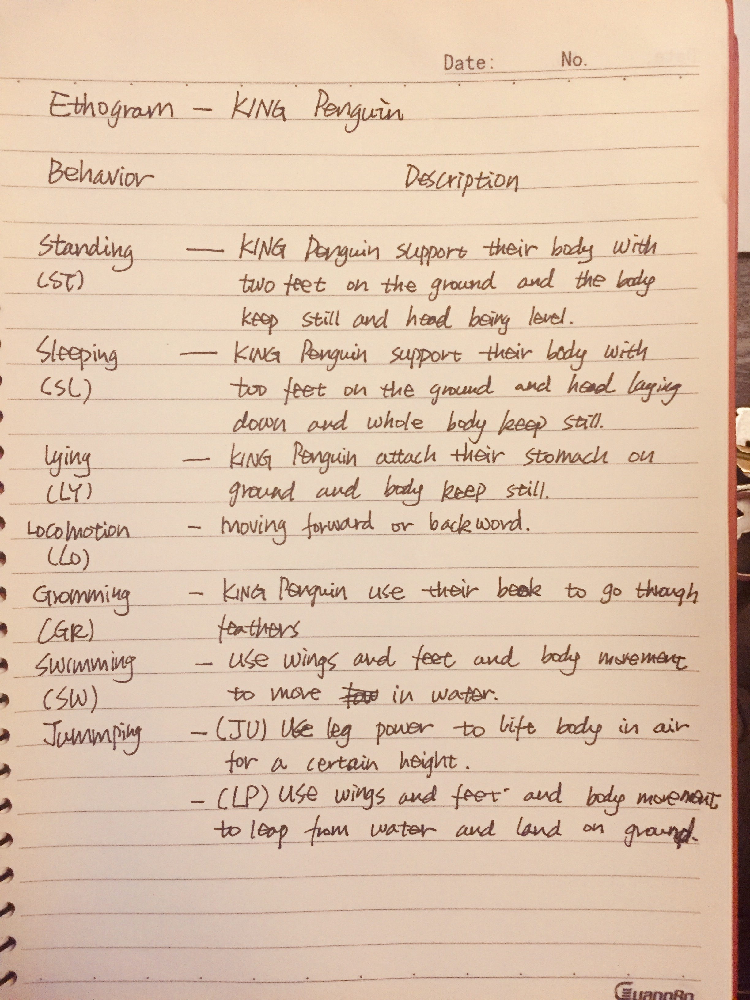
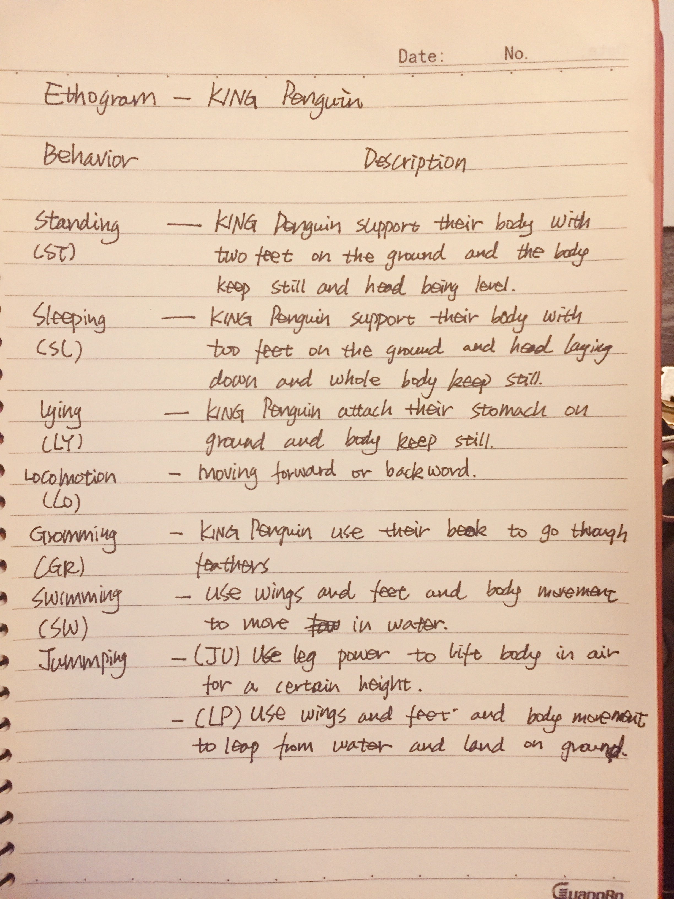

Observations and Ethograms
Yufei Zhang
Ethogram One: Panda


 







For this observation of panda I used the ZooMonitor app and choose the sampling method of Interval. I set 60 intervals for 30mins observation so it was 30s each.
Behavior Experts for Panda:
Dr.Zhihe Zhang, Dr.Dunwu Qi
They are both lead expert at Chengdu Research Base of Giant Panda Breeding and work for the diraction of panda returning to Wild.
Ethogram Two: King Penguin

 

Behavior Experts for King Penguin:
Dr.Dyan deNapoli
Dr.Dyan deNapoli worked closely with penguins at Boston's prestigious New England Aquarium and in the wild for nine years.
Reflection & Finding
In conclusion, a 30-minutes observation is far from enough and will easily be affected by random accidents that happened, thus the observation conclusion is not convincing and can't represent that kind of animal's behavior. For example, my first attempt in panda observation turn out to be a failure cause the live cam zoom in during the process of observation and the panda I was observing can no longer be seen. I wasn't sure if this qualified as animal not visible cause this is not caused by animal behavior but human behavior. And also I used Interval sampling method and I set 60 for 30-mins observation, but I still miss the panda climbing the tree before it becomes not visible. For next time I think I'll change my sampling method to Continuous to be able to record rare behavior but also save a lot of effort of repetitive recording in the case when animal keeps doing same behavior like lying or feeding.
And during the making of ethogram the problem I run into is how to make the list before observation, and also different positions animal may change during the same behavior. During the observation of panda, the panda took a lot of time feeding, but during the time it also changes from sitting to laying down and rolling, which cause the problem that I can only record one behavior for one Interval but those behavior happens simultaneously. For next time I think I'll observe the animal for a longer period of time before making ethogram so I could be more prepared for all the situation that might happen.